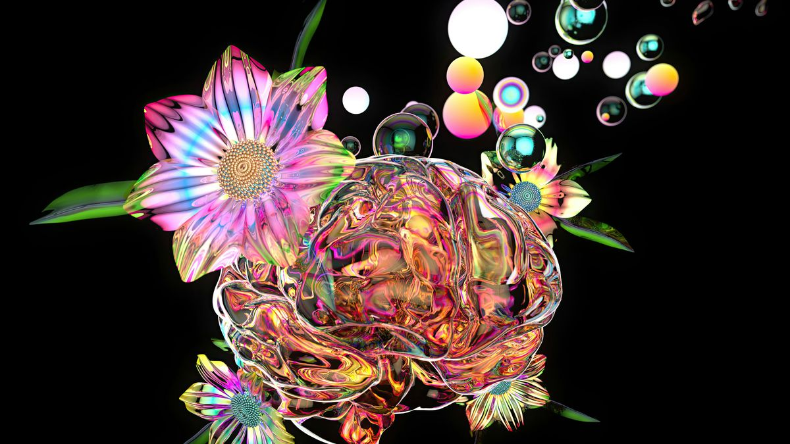

Salta al contenuto
Tondo-lab
Corsi
Biblioteche
About
Login
Archivio corsi
Biblioteca Braidense
UX/UI per servizi pubblici
Sabato 24 maggio · 9:00-10:30 · gratuito
Biblioteca Sormani
Scrittura efficace per il lavoro
Email, CV e presentazioni · 12 posti

Valvassori Peroni
Introduzione a Figma
Prototipo cliccabile in gruppo · 10 posti
Biblioteca Chiesa Rossa
Fotografia urbana con smartphone
Scatto, selezione e racconto visivo
Dergano-Bovisa
Italiano pratico per nuovi cittadini
Conversazione utile · accessibile
Biblioteca Affori
Podcast di quartiere
Voce, audio e memoria locale